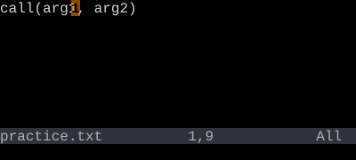
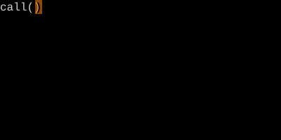
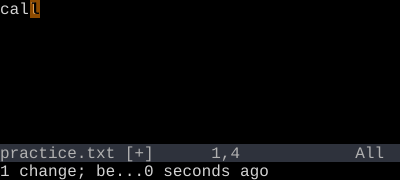

Bracket Text Objects
i( i{ i[ i< — operate on the contents of any bracket pair.
i( / a( for parens, i{ / a{ for braces, i[ / a[ for square brackets, i< / a< for angle brackets. ib and iB are aliases for parens and braces.
Bracket objects are the most-used text objects in real code. They're how you yank arguments, change function bodies, and delete array literals without ever counting characters.
| Key | Note |
|---|---|
| c | |
| i | |
| ( |
| Key | Note |
|---|---|
| d | |
| a | |
| { |
| Key | Note |
|---|---|
| v | |
| i | |
| [ |
| Key | Note |
|---|---|
| y | |
| i | |
| < |
Reference
| Object | Range |
|---|---|
| i( / ib | Inside ( … ) |
| a( / ab | Including ( … ) |
| i{ / iB | Inside { … } |
| a{ / aB | Including { … } |
| i[ / a[ | Inside / including [ … ] |
| i< / a< | Inside / including < … > |
Worked example — di( vs da(
Brackets work like quotes.



See also: Quote Text Objects, Match Bracket, The Vim Grammar